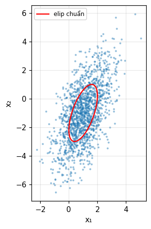
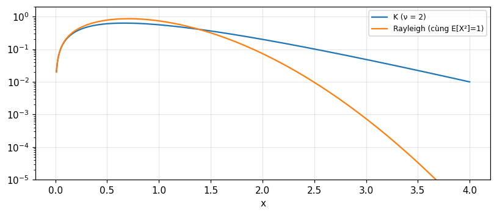

Các phân bố xác suất thường gặp
Bernoulli, nhị thức, hình học, Pascal, siêu bội, Poisson, đều, chuẩn, mũ, gamma, beta, chi bình phương, Rayleigh, Rice, Maxwell, Nakagami, Student, Cauchy, Gauss nhiều chiều, Weibull, log-chuẩn và K.
Bài giảng (slide) Thực hành với Jupyter Notebook Quiz tự kiểm tra
Bài giảng (slide)
Các phân bố xác suất thường gặp
- Nhận biết phân bố nào mô hình hóa tình huống nào: đếm thành công, thời gian chờ, tổng nhiều nhiễu, biên độ tín hiệu, suy hao đa đường.
- Tính trung bình, phương sai, hàm đặc trưng của mỗi phân bố và kiểm bằng hai cách.
- Dùng hàm sai số và hàm Q để tính xác suất chuẩn; dùng giới hạn trung tâm cho nhị thức và Poisson.
- Dựng chuỗi liên hệ: Gauss → chi bình phương → Rayleigh, Rice, Maxwell; Rayleigh ≡ Weibull b=2; gamma × Rayleigh → K.
- Làm việc với Gauss hai chiều: điều kiện, elip chuẩn, độc lập bằng không tương quan.
Dùng nút, chấm tròn hoặc phím ← → để chuyển slide.
Phân bố rời rạc
- Bernoulli, nhị thức, đa thức
- Hình học, Pascal, siêu bội
- Poisson và giới hạn của nhị thức
Bản đồ chương
Chương 1 định nghĩa xác suất, biến ngẫu nhiên và mômen; chương 2 nghiên cứu các phân bố hay gặp trong các ứng dụng như radar và truyền thông, ở dạng tổng quát, kèm vài chi tiết cho ứng dụng cụ thể (Barkat, mục 2.1, tr. 75). Mục 2.2 nói về phân bố rời rạc, mục 2.3 về liên tục, mục 2.4 về các phân bố đặc biệt: nhiều chiều, Weibull, log-chuẩn, K và hợp thành tổng quát.
Bernoulli và nhị thức
Phép thử Bernoulli có hai kết cục: thành công (1) với xác suất p, thất bại (0) với q=1-p. Xác suất đúng k thành công trong n phép thử độc lập là nhị thức \binom nk p^kq^{n-k}; trung bình np, phương sai npq, hàm đặc trưng (pe^{j\omega}+q)^n (Barkat, mục 2.2.1, tr. 75 đến 77). Ví dụ 2.1: gieo xúc xắc 10 lần, được mặt 6 đúng hai lần: 0.2907. Số đo: E = 1.6667 và phương sai 1.3889.
Ví dụ 2.2: quyết định theo đa số
Máy thu nhận ba ký hiệu và quyết định theo đa số; mỗi quyết định đúng với xác suất 0.8. Xác suất quyết định đúng là P(D=2)+P(D=3)=3(0.8)^2(0.2)+(0.8)^3 = 0.896 (tr. 77 đến 78). Số đo bằng công thức nhị thức, bằng hàm khối và bằng mô phỏng cùng cho kết quả ấy. Đây là ví dụ đầu tiên cho thấy xử lý nhiều quan sát cải thiện độ tin cậy, ý tưởng cốt lõi của phát hiện tín hiệu.
Đa thức
Nếu mỗi phép thử có k kết cục loại trừ với xác suất P_1,\ldots,P_k thì xác suất có n_i lần kết cục i là \dfrac{n!}{n_1!\cdots n_k!}P_1^{n_1}\cdots P_k^{n_k} (tr. 78). Các X_i không độc lập vì \sum n_i=n. Số đo: n=10, xác suất (0.2,0.3,0.5), số lần (2,3,5): 0.0851.
Hình học và Pascal
Nếu thử đến khi biến cố A xuất hiện lần đầu ở phép thử thứ k: hình học P(X=k)=q^{k-1}p, E[X]=1/p, \operatorname{var}=q/p^2, hàm sinh mômen p/(1-qe^t) (Barkat, mục 2.2.2, tr. 78 đến 80). Dừng ở lần thứ r: Pascal (nhị thức âm) P(X=k)=\binom{k-1}{r-1}p^rq^{k-r} (tr. 80 đến 82), E=r/p, \operatorname{var}=rq/p^2; r=1 cho hình học. Số đo: xúc xắc, mặt 6 đầu tiên ở lần thứ 3: 0.1157; E = 6 và phương sai 30; Pascal r=3, p=0.5, k=5: 0.1875.
Liên hệ nhị thức và Pascal
Nếu X là nhị thức (số thành công trong n thử) và Y là Pascal (số thử để có r thành công) thì P(X\ge r)=P(Y\le n): có ít nhất r thành công trong n thử đầu khi và chỉ khi cần nhiều nhất n thử để có r thành công; tương tự P(X<r)=P(Y>n) (tr. 82). Số đo với n=10, r=3, p=0.3: 0.6172 bằng cả hai vế.
Siêu bội: lấy mẫu không hoàn lại
Bình có N bóng, r trắng. Rút n bóng có hoàn lại thì số bóng trắng là nhị thức. Không hoàn lại thì P(X=k)=\binom rk\binom{N-r}{n-k}/\binom Nn, k\le\min(n,r), trung bình nr/N=np và phương sai npq\,\dfrac{N-n}{N-1} (Barkat, mục 2.2.3, tr. 82 đến 84). Ví dụ 2.3: 5 trắng, 3 đen, 3 đỏ, được đúng 3 trắng sau 7 lần rút không hoàn lại: 0.4545 =5/11; phương sai 0.6942. Khi N\to\infty tiến về nhị thức: với N=10000, r=3000, n=10, k=3 lệch giữa hai phân bố chỉ 1.3e-04.
Poisson
Số biến cố trong khoảng thời gian t, khi các khoảng độc lập và xác suất không phụ thuộc chỗ bắt đầu: P(X=k)=e^{-\lambda}\lambda^k/k! (Barkat, mục 2.2.4, tr. 85 đến 86). Ví dụ: lưu lượng điện thoại, hỏng thiết bị, phân rã phóng xạ. Trung bình và phương sai đều bằng \lambda, E[X^2]=\lambda^2+\lambda, hàm đặc trưng \exp[\lambda(e^{j\omega}-1)]. Số đo với \lambda=3: E[X^2] = 12. Ví dụ 2.4: tổng hai Poisson độc lập là Poisson với \lambda_1+\lambda_2; tại 5 với \lambda=2,3 ta được 0.1755 bằng P(5) của Poisson tham số 5.
Poisson là giới hạn của nhị thức
Khi n\to\infty, p=\lambda/n nhỏ: \binom nk p^k(1-p)^{n-k}\to e^{-\lambda}\lambda^k/k!, dùng (1-\lambda/n)^n\to e^{-\lambda} và n(n-1)\cdots(n-k+1)/n^k\to1 (tr. 87 đến 88). Siêu bội tiến về nhị thức rồi Poisson. Số đo: n=1000, p=0.003, k=2: nhị thức 0.2242, Poisson \lambda=3 0.224; lệch 1.1e-04.
Tự kiểm tra phần 1
- Khác nhau giữa nhị thức và Pascal?
- Khi nào siêu bội gần nhị thức?
- Vì sao Poisson có trung bình bằng phương sai?
Gợi ý: nhị thức cố định n, Pascal cố định r; khi N\gg n; vì là giới hạn np và npq với q\to1.
Phân bố liên tục cơ bản: đều, chuẩn, mũ, gamma, beta
- Đều và chuẩn: hàm sai số, Q
- Giới hạn trung tâm cho nhị thức và Poisson
- Mũ, Laplace, gamma, beta
Phân bố đều
f_X=\frac1{b-a} trên [a,b]; F_X=(x-a)/(b-a); trung bình \tfrac12(a+b), phương sai \tfrac1{12}(b-a)^2, hàm đặc trưng (e^{j\omega b}-e^{j\omega a})/[j\omega(b-a)] (Barkat, mục 2.3.1, tr. 88 đến 89). Với [2,8]: phương sai 3, kiểm bằng tích phân số. Hàm đặc trưng là một sinc dịch pha: dạng quen của Bracewell.
Phân bố chuẩn
f_X=\dfrac1{\sqrt{2\pi}\sigma}\exp\!\left[-\dfrac{(x-m)^2}{2\sigma^2}\right]; hàm đặc trưng \exp(jm\omega-\sigma^2\omega^2/2); mômen bậc chẵn của biến trung bình 0 là n!\sigma^n/[(n/2)!2^{n/2}], bậc lẻ bằng 0 (Barkat, mục 2.3.2, tr. 89 đến 93). Chuẩn tắc N(0,1): E[X^4] = 3 =3. Đỉnh của mật độ 1/(\sqrt{2\pi}\sigma), và tại m\pm\sigma mật độ còn 0.607 lần đỉnh (hình 2.3).
Hàm sai số và hàm Q
\text{erf}(x)=\frac2{\sqrt\pi}\int_0^xe^{-u^2}du; F_X(x)=\tfrac12+\tfrac12\text{erf}\!\left(\frac{x-m}{\sqrt2\sigma}\right); Q(x)=\frac1{\sqrt{2\pi}}\int_x^\infty e^{-u^2/2}du=\tfrac12\text{erfc}(x/\sqrt2); Q(0)=\tfrac12, Q(-x)=1-Q(x), và Q(x)\approx\frac1{x\sqrt{2\pi}}e^{-x^2/2} với x>4 (tr. 91 đến 92). Ví dụ 2.5: Y\sim N(3,4): P(Y>4) = 0.3085; P(2<Y<5) = 0.5328. Tại x=4: Q(4) = 3.167e-05 còn xấp xỉ cho 3.346e-05.
Giới hạn trung tâm
Với X_1,X_2,\ldots độc lập cùng phân bố, tổng S_n có mật độ là tích chập f_{X_1}*\cdots*f_{X_n} tiến tới chuẩn với trung bình \sum m_k và phương sai \sum\sigma_k^2; chuẩn hóa \sum(X_k-m_k)/\sigma tiến tới N(0,1) (Barkat, tr. 95). Đúng cho mọi phân bố, ở đây xét nhị thức, U=(X-np)/\sqrt{npq}, và Poisson, (X-\lambda)/\sqrt\lambda (tr. 95 đến 96). Đó là kết quả của Bracewell (module 8 và 10) với ngôn ngữ xác suất.
Bài 2.11 và 2.12: giới hạn trung tâm thực hành
Bài 2.11 (tr. 138): gieo hai xúc xắc 200 lần, thành công là tổng bằng 7 (p=1/6); xác suất thành công ít nhất 20 phần trăm số lần (từ 40): chính xác 0.1223, xấp xỉ chuẩn (có hiệu chỉnh liên tục) 0.121. Bài 2.12: tổng 100 biến Poisson \lambda=0.032 là Poisson \lambda=3.2; P(S>5) chính xác 0.1054, xấp xỉ chuẩn (có hiệu chỉnh) 0.0993: xấp xỉ khá với nhị thức nhưng kém hơn khi \lambda nhỏ.
Mũ và Laplace
Mũ: f_X=\alpha e^{-\alpha x}, x\ge0; trung bình \beta=1/\alpha, phương sai \beta^2, hàm đặc trưng (1-j\beta\omega)^{-1} (Barkat, mục 2.3.3, tr. 96 đến 97). Tính chất không nhớ (bài 2.7): P(X\ge x_1+x_2\mid X>x_1)=P(X\ge x_2): với \alpha=2, x_1=0.5, x_2=0.7 cả hai vế bằng 0.2466. Laplace: f_X=\frac\alpha2e^{-\alpha|x|}, hàm đặc trưng e^{-jm\omega}/(1+\lambda^2\omega^2), phương sai 2 khi \alpha=1 (tr. 97 đến 98). Đây là các phân bố của module 10 (Bracewell).
Gamma
Hàm gamma \Gamma(\alpha)=\int_0^\infty x^{\alpha-1}e^{-x}dx=(\alpha-1)\Gamma(\alpha-1), \Gamma(n)=(n-1)!, \Gamma(\tfrac12)=\sqrt\pi = 1.7725. Phân bố gamma G(\alpha,\beta): f_X=\dfrac{x^{\alpha-1}e^{-x/\beta}}{\Gamma(\alpha)\beta^\alpha}; trung bình \alpha\beta, phương sai \alpha\beta^2, hàm đặc trưng (1-j\beta\omega)^{-\alpha} (Barkat, mục 2.3.4, tr. 98 đến 100). Với \alpha=3, \beta=2: trung bình 6, phương sai 12. Đó là Pearson III của Bracewell: tổng \alpha biến mũ.
Beta
Hàm beta B(\alpha,\beta)=\int_0^1u^{\alpha-1}(1-u)^{\beta-1}du=\Gamma(\alpha)\Gamma(\beta)/\Gamma(\alpha+\beta) (Barkat, tr. 100). Phân bố beta trên (0,1): f_X=x^{\alpha-1}(1-x)^{\beta-1}/B(\alpha,\beta), trung bình \alpha/(\alpha+\beta), phương sai \alpha\beta/[(\alpha+\beta)^2(\alpha+\beta+1)] (tr. 100 đến 101). Với \alpha=2, \beta=5: trung bình 0.2857, phương sai 0.0255, kiểm bằng tích phân và mô phỏng.
Tự kiểm tra phần 2
- Q(x) liên hệ thế nào với \text{erfc}?
- Vì sao phân bố mũ "không nhớ"?
- Gamma G(\alpha,\beta) có trung bình và phương sai bao nhiêu?
Gợi ý: Q(x)=\tfrac12\text{erfc}(x/\sqrt2); xác suất còn lại sau x_1 có cùng dạng; \alpha\beta và \alpha\beta^2.
Từ Gauss tới chi bình phương, Rayleigh, Rice, Maxwell
- Chi bình phương và chi bình phương không tâm
- Rayleigh, Rice, Maxwell
- Nakagami, Student, F, Cauchy
Chi bình phương
Nếu X_1,\ldots,X_n chuẩn N(0,\sigma^2) độc lập thì X=\sum X_i^2 là chi bình phương n bậc tự do; nó là gamma với \alpha=n/2, \beta=2\sigma^2 (Barkat, mục 2.3.5, tr. 101 đến 106). Với \sigma=1: trung bình n, phương sai 2n. Số đo n=4: trung bình 4 và phương sai 8 theo mô phỏng và theo gamma G(2,2).
Chi bình phương không tâm
Nếu X_i có trung bình m_i\ne0, X=\sum X_i^2 là chi bình phương không tâm với tham số không tâm \lambda=\sum m_i^2; trung bình n\sigma^2+\lambda, phương sai 2n\sigma^4+4\sigma^2\lambda; hàm phân bố biểu diễn qua hàm Q Marcum tổng quát, F_X(x)=1-Q_m(\sqrt\lambda/\sigma,\sqrt x/\sigma) với m=n/2 (tr. 102 đến 106). Số đo n=3, \sigma=1, \lambda=5: trung bình 8 và phương sai 26.
Rayleigh
Nếu X_1,X_2 độc lập N(0,\sigma^2) thì X=X_1^2+X_2^2 là chi bình phương 2 bậc và Y=\sqrt X là Rayleigh: f_Y=\frac y{\sigma^2}e^{-y^2/2\sigma^2}, F_Y=1-e^{-y^2/2\sigma^2}, trung bình \sigma\sqrt{\pi/2}, phương sai (2-\pi/2)\sigma^2 (Barkat, mục 2.3.6, tr. 106 đến 108). Với \sigma=1: trung bình 1.2533, phương sai 0.4292, F(\sigma) = 0.3935 (hình 2.9). Ví dụ: Y=a+bX^2 với X Rayleigh có phương sai 4b^2\sigma^4; b=2, \sigma=1: 16.
Suy ra Rayleigh bằng tọa độ cực
F_X(x)=P(X_1^2+X_2^2\le x^2)=\frac1{2\pi\sigma^2}\int_0^{2\pi}d\theta\int_0^xre^{-r^2/2\sigma^2}dr=1-e^{-x^2/2\sigma^2}, đạo hàm cho f_X=\frac x{\sigma^2}e^{-x^2/2\sigma^2} (tr. 108 đến 110). Kết quả trùng với định lý cơ bản của chương 1. Số đo: P(R\le2) theo tích phân cực = 0.8647 = 1-e^{-2} và mô phỏng.
Rice
Nếu X_1,X_2 có trung bình m_1,m_2 (tín hiệu) và phương sai \sigma^2 (nhiễu), R=\sqrt{X_1^2+X_2^2} là Rice: f_R=\frac r{\sigma^2}e^{-(r^2+\lambda)/2\sigma^2}I_0(\sqrt\lambda r/\sigma^2), \lambda=m_1^2+m_2^2, F_R=1-Q_1(\sqrt\lambda/\sigma,r/\sigma); \lambda=0 cho Rayleigh (tr. 111 đến 113). Số đo với m_1=m_2=1, \sigma=1: F_R(2) = 0.6057 theo hàm Marcum (qua chi bình phương không tâm), theo tích phân mật độ Rice và theo mô phỏng; trung bình R = 1.8129.
Maxwell
Ba biến chuẩn N(0,\sigma^2): Y=\sqrt{X_1^2+X_2^2+X_3^2} là Maxwell, f_Y=\frac1{\sigma^3}\sqrt{\tfrac2\pi}\,y^2e^{-y^2/2\sigma^2}, trung bình 2\sigma\sqrt{2/\pi}, phương sai \sigma^2(3-8/\pi) (tr. 113 đến 114). Với \sigma=1: trung bình 1.5958, phương sai 0.4535. Tổng quát hóa cho n biến có trung bình bất kỳ ta được chi bình phương không tâm, Rayleigh, Rice, Maxwell là các trường hợp riêng.
Nakagami m
Trong truyền thông, Nakagami mô tả thống kê tín hiệu qua kênh đa đường suy hao: f_X=\frac2{\Gamma(m)}\left(\frac mv\right)^mx^{2m-1}e^{-mx^2/v} với v=E[X^2] và m=v^2/E[(X^2-v)^2]\ge\tfrac12 là "hệ số suy hao" (Barkat, mục 2.3.7, tr. 115); m=1 cho Rayleigh. Số đo: mô phỏng với m=2, v=1 cho 2 khi ước lượng m từ mômen, và E[X^2] = 1; tích phân số của mật độ bằng 1.
Student t và F
T=X/\sqrt{Y/n} với X\sim N(0,1), Y\sim\chi^2_n độc lập là Student t với n bậc: f_T=\dfrac{\Gamma(\frac{n+1}2)}{\sqrt{n\pi}\Gamma(n/2)}(1+t^2/n)^{-(n+1)/2}; trung bình 0, phương sai n/(n-2) khi n>2 (tr. 115 đến 117). F=(Y_1/n_1)/(Y_2/n_2) là tỉ số hai chi bình phương chuẩn hóa, trung bình n_2/(n_2-2) (tr. 117 đến 120). Số đo: t với n=5: phương sai 1.6667; F với (4,10) bậc: trung bình 1.25; t với n=1: P(|T|<1) = 0.5, chính là Cauchy.
Cauchy: không có trung bình
f_X=\dfrac{\beta}{\pi[\beta^2+(x-\alpha)^2]}, C(\alpha,\beta): trung bình (giá trị chính) \alpha nhưng phương sai và mômen cao không tồn tại; hàm sinh mômen không tồn tại, hàm đặc trưng e^{j\alpha\omega-\beta|\omega|}; tổng các biến Cauchy là Cauchy với \alpha và \beta cộng lại (Barkat, mục 2.3.9, tr. 120 đến 121). Hệ quả: trung bình mẫu của n biến Cauchy có cùng phân bố với một biến, không hội tụ, trái với luật số lớn. Số đo: P(|\bar X_n|<1) = 0.5 với n=1 và 0.5 với n=100; còn với chuẩn tắc, n=100 cho 1. Tổng hai C(0,1) là C(0,2): P(|X|<2) = 0.5.
Tự kiểm tra phần 3
- Khi nào biên độ là Rayleigh, khi nào là Rice?
- Chi bình phương n bậc là trường hợp riêng của gamma nào?
- Vì sao luật số lớn không áp dụng cho Cauchy?
Gợi ý: Rayleigh khi chỉ có nhiễu, Rice khi có tín hiệu; \alpha=n/2, \beta=2\sigma^2; vì không có trung bình hữu hạn (kỳ vọng |X| vô hạn).
Gauss nhiều chiều và các phân bố đặc biệt
- Gauss hai chiều và nhiều chiều
- Weibull và log-chuẩn
- Phân bố K và hợp thành tổng quát
Gauss hai chiều
f_{X_1X_2}=\dfrac1{2\pi\sigma_1\sigma_2\sqrt{1-\rho^2}}\exp\!\Big\{-\dfrac1{2(1-\rho^2)}\Big[\dfrac{(x_1-m_1)^2}{\sigma_1^2}+\dfrac{(x_2-m_2)^2}{\sigma_2^2}-2\rho\dfrac{(x_1-m_1)(x_2-m_2)}{\sigma_1\sigma_2}\Big]\Big\} (Barkat, mục 2.4.1, tr. 121 đến 122). Các phân bố biên là chuẩn, và phân bố điều kiện f(x_2\mid x_1) cũng chuẩn với trung bình m_2+\rho\frac{\sigma_2}{\sigma_1}(x_1-m_1) và phương sai \sigma_2^2(1-\rho^2). Số đo: m=(1,-1), \sigma=(1,2), \rho=0.6, cho x_1=2: trung bình điều kiện 0.2, phương sai điều kiện 2.56, theo công thức và theo mô phỏng có điều kiện.
Hàm đặc trưng và dạng ma trận
Với ma trận hiệp phương sai C=\begin{pmatrix}\sigma_1^2&\rho\sigma_1\sigma_2\\\rho\sigma_1\sigma_2&\sigma_2^2\end{pmatrix}, |C|=\sigma_1^2\sigma_2^2(1-\rho^2), mật độ là \dfrac1{2\pi\sqrt{|C|}}\exp[-\tfrac12(\mathbf x-\mathbf m)^TC^{-1}(\mathbf x-\mathbf m)] và hàm đặc trưng \exp(-\tfrac12\boldsymbol\omega^TC\boldsymbol\omega+j\mathbf m^T\boldsymbol\omega) (tr. 123 đến 124); dạng n chiều là (2.236), (2.237) (tr. 127). Số đo với C ở trên: |C| = 2.56; mật độ tại tâm bằng 0.0995 theo công thức vô hướng và theo công thức ma trận.
Không tương quan là độc lập (chỉ với Gauss)
Khi \rho=0, mật độ chung phân tích thành tích các mật độ biên nên X_1,X_2 độc lập, và hàm đặc trưng chung bằng tích các hàm đặc trưng biên. Đây là đặc tính quan trọng của biến Gauss: không tương quan kéo theo độc lập; ma trận hiệp phương sai đường chéo là điều kiện cần và đủ (tr. 124, 127). Tương phản với module 10 (nửa đĩa: \rho=0 nhưng phụ thuộc). Số đo: với \rho=0 độ lệch tối đa giữa mật độ chung và tích các biên là 3e-17.
Elip chuẩn và phép quay
Đặt biểu thức trong ngoặc của mũ bằng 1 được elip chuẩn tâm (m_1,m_2) (hình 2.16). Xem X_1,X_2 là xoay góc \theta của hai biến độc lập U,V: \sigma_1^2=\sigma_u^2\cos^2\theta+\sigma_v^2\sin^2\theta, \sigma_2^2=\sigma_u^2\sin^2\theta+\sigma_v^2\cos^2\theta, E[X_1X_2]=(\sigma_u^2-\sigma_v^2)\sin\theta\cos\theta và \theta=\tfrac12\arctan\dfrac{2\rho\sigma_1\sigma_2}{\sigma_1^2-\sigma_2^2} (tr. 124 đến 126). Với \sigma=(1,2), \rho=0.6: \theta = -19.33 độ, \sigma_u^2 = 0.579, \sigma_v^2 = 4.421, và đó chính là các trị riêng của C (tính bằng phân tích trị riêng).

Weibull
f_X=abx^{b-1}e^{-ax^b}, x>0, với a là tham số tỉ lệ, b tham số hình dạng; F_X=1-e^{-ax^b}; E[X]=a^{-1/b}\Gamma(1+1/b), \operatorname{var}=a^{-2/b}[\Gamma(1+2/b)-\Gamma^2(1+1/b)] (Barkat, mục 2.4.2, tr. 129 đến 131). b=1 cho mũ, b=2 cho Rayleigh với a=1/2\sigma^2. Số đo: b=2, a=\tfrac12: trung bình 1.2533 bằng Rayleigh \sigma\sqrt{\pi/2}; b=3, a=1: trung bình 0.893, phương sai 0.1053.
Log-chuẩn
\ln X là chuẩn: f_X=\dfrac1{\sqrt{2\pi}\sigma x}\exp\!\left[-\dfrac{\ln^2(x/x_m)}{2\sigma^2}\right] với x_m là trung vị (Barkat, mục 2.4.3, tr. 131 đến 132). Trung bình x_me^{\sigma^2/2}, phương sai x_m^2e^{\sigma^2}(e^{\sigma^2}-1), E[X^k]=x_m^ke^{k^2\sigma^2/2}; tỉ số trung bình trên trung vị \rho=e^{\sigma^2/2}. Với x_m=1, \sigma=0.5: trung bình 1.1331, phương sai 0.3647.
Phân bố K: speckle nhân texture
Phân bố K sinh ra để mô hình nhiễu phản xạ biển của radar: f_X=\dfrac4{b\Gamma(\nu)}\left(\dfrac xb\right)^\nu K_{\nu-1}\!\left(\dfrac{2x}b\right), x\ge0, K_\nu là hàm Bessel biến dạng, b tỉ lệ, \nu hình dạng (Barkat, mục 2.4.4, tr. 132 đến 135). Nó là kết quả của X=ST: S speckle Rayleigh f_S=2se^{-s^2} và T texture với f_T=\frac2{b^\nu\Gamma(\nu)}t^{2\nu-1}e^{-t^2/b^2}, tính từ f_X=\int f_{X|T}(x|t)f_T(t)dt với f_{X|T}=\frac{2x}{t^2}e^{-x^2/t^2}. Với b=1, \nu=2: f_X(1) = 0.5595 bằng tích phân hợp thành và bằng công thức Bessel; E[X^2]=\nu b^2 = 2, kiểm bằng mô phỏng.

Hợp thành tổng quát và ý nghĩa
Phân bố K là một ví dụ của phân bố hợp thành: một tham số của phân bố cơ sở (Rayleigh) lại ngẫu nhiên (gamma). Barkat trình bày hợp thành tổng quát cho các mô hình nhiễu radar không Gauss (mục 2.4.5, tr. 135 đến 136), có nguồn từ các công trình về thống kê nhiễu độ phân giải cao (Anastassopoulos và cộng sự, 1999). Ý nghĩa: khi biến đổi thang của nhiễu nền, như tán xạ biển, thay đổi chậm, ngưỡng phát hiện cố định sẽ sai; đó là lý do dùng ngưỡng thích nghi CFAR ở các module 25 và 26.
Tự kiểm tra phần 4
- Phân bố điều kiện của Gauss hai chiều có gì đặc biệt?
- Weibull b=2 trùng phân bố nào?
- K là tích của hai biến nào?
Gợi ý: cũng chuẩn, trung bình tuyến tính theo x_1, phương sai \sigma_2^2(1-\rho^2); Rayleigh; speckle Rayleigh và texture kiểu gamma.
Điều cần mang theo
- Bernoulli sinh nhị thức, hình học, Pascal; siêu bội là lấy mẫu không hoàn lại; Poisson là giới hạn nhị thức.
- Chuẩn: Q, erf; giới hạn trung tâm cho nhị thức và Poisson; mũ không nhớ, gamma là tổng mũ, Laplace là mũ hai phía.
- Gauss → chi bình phương → Rayleigh (nhiễu), Rice (tín hiệu cộng nhiễu), Maxwell (3 chiều); Nakagami cho suy hao đa đường.
- Cauchy không có mômen nên luật số lớn không đúng; Gauss nhiều chiều: không tương quan là độc lập.
- Weibull tổng quát hóa mũ và Rayleigh; log-chuẩn và K mô hình nhiễu đuôi nặng, với K là speckle nhân texture.
📜 Bối cảnh lý thuyết & lịch sử
Chương 2 xây trên các tài liệu kinh điển: Abramowitz và Stegun cho hàm đặc biệt, Feller và Papoulis cho xác suất, Proakis cho truyền thông số, Jakeman và Pusey (1976) đề xuất phân bố K cho nhiễu biển, Ward và Watts (1985) về nhiễu biển radar, Sekine và Mao về nhiễu Weibull, Anastassopoulos và cộng sự (1999) về thống kê nhiễu độ phân giải cao (Barkat, tr. 139 và thư mục).
🔎 Case study thực tế
Chọn mô hình cho biên độ nhiễu. Nếu nhiễu nền chỉ là nhiệt (tổng nhiều đóng góp độc lập, giới hạn trung tâm), hai thành phần vuông pha là Gauss và biên độ là Rayleigh: xác suất biên độ vượt \sigma là 1-F(\sigma) = 0.6065. Nếu có thêm tín hiệu cố định, biên độ là Rice, F_R(2) = 0.6057 với ví dụ trên. Nếu hệ số phản xạ trung bình thay đổi chậm theo vùng (biển động), tích speckle nhân texture cho K, đuôi nặng hơn Rayleigh, và ngưỡng cho cùng xác suất báo động giả phải cao hơn nhiều: đây là lý do có phát hiện CFAR. Cauchy là trường hợp cực đoan, không có trung bình: 0.5 cho mọi n.
🧮 Bảng công thức của module
🧪 Thực hành với Jupyter Notebook
- Mở notebook và chạy cell cài đặt.
- Bài 1: kiểm bằng mô phỏng P(X\ge r)=P(Y\le n) cho nhị thức và Pascal với các p khác nhau.
- Bài 2: đối với Rice, thay \lambda từ 0 tới 9 và quan sát mật độ chuyển từ Rayleigh sang gần Gauss (hình 2.12).
- Bài 3: tính xác suất vượt ngưỡng cố định của Rayleigh, Weibull b=1.5 và K (\nu=1) cùng trung bình bình phương và so sánh đuôi.
- Bài 4: xác nhận X=ST cho K bằng mô phỏng hai bước rồi so histogram với công thức Bessel.
Mở trên Google Colab Tải notebook (.ipynb)
Notebook tự sinh dữ liệu bằng mã, không cần tải file ngoài. Mọi con số trên trang này được in ra từ notebook và đối chiếu bằng hai phương pháp độc lập.
⚠️ Những bẫy diễn giải sai
Không với Cauchy: P(|\bar X_n|<1) = 0.5 với n=1 và 0.5 với n=100, còn chuẩn tắc cho 1 (Barkat, mục 2.3.9).
Chỉ đúng cho Gauss chung; với \rho=0 mật độ chung phân tích được (lệch 3e-17) nhưng điều này không đúng với phân bố tùy ý (module 10, nửa đĩa).
Tốt khi \lambda lớn; với \lambda=3.2 xấp xỉ cho 0.0993 so với chính xác 0.1054 (bài 2.12).
Rayleigh chỉ khi trung bình các thành phần bằng 0; có tín hiệu thì là Rice (trung bình 1.8129 với \lambda=2 so với Rayleigh 1.2533).
✅ Quiz tự kiểm tra
Bấm một đáp án để chấm ngay và xem giải thích. Kết quả không được lưu.
Nguồn tham khảo
- M. Barkat, Signal Detection and Estimation, 2nd ed., Artech House, 2005, chương 2 (tr. 75 đến 139).
- Tài liệu do chương 2 trích: Anastassopoulos et al. (1999), Abramowitz và Stegun, Feller, Papoulis, Proakis, Jakeman và Pusey (1976), Ward và Watts (1985).